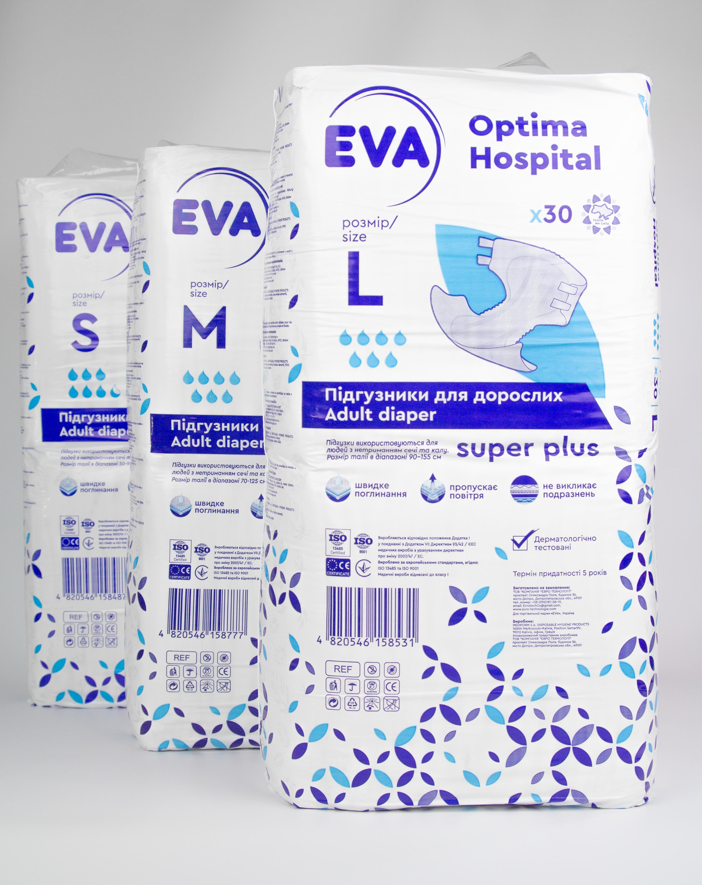
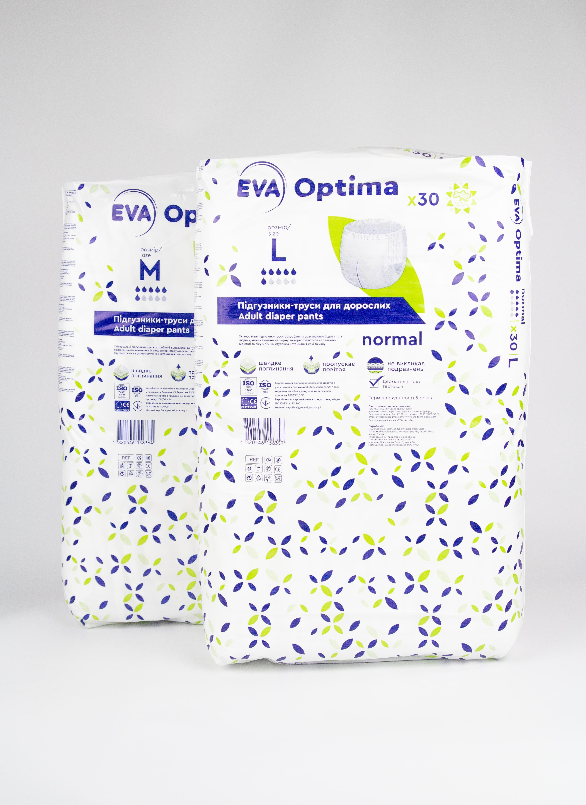

Підгузки та трусики для дорослих
Підгузники

Обираючи підгузники EVA ви отримуєте гарант чистоти та якості, адже підгузки EVA мають великі переваги, а саме:
- захист від протікання складається з гідрофобних матеріалів;
- підгузки не викликають подразнень;
- гарантія сухості під час використання;
- 4 зручні багаторазові застібки;
- абсорбуюча серцевина швидко поглинає та нейтралізує запах;
- індикатор наповнення дає змогу контролювати рівень заповнення підгузка;
- бокові частини підгузків виконані з тонкого, м’якого та дихаючого нетканого матеріалу, для забезпечення 100 % дихання шкіри;
- всі матеріали, що застосовуються при виробництві є не алергенні, не токсичні, не містять хлор та латекс;
Ми розробили цю лінійку зважаючи на комфорт людини, тому підгузники м’які, не стискають шкіру та не викликають подразнень. Підгузки дихаючі та використовуються незалежно від статі людини. Абсорбуюча серцевина виготовлена зі 100 % довгих волокон целюлози без хлору та високоякісного супер поглинаючого полімера САП із нейтралізатором запаху — odor control. Абсорбуючий шар, забезпечує швидке поглинання, утримання та рівномірний розподіл рідини в середині підгузка.
Підгузки EVA є в п’ятьох розмірах, та залежать від об’єму поглинання рідини, та окружності стегон/талії:
- Розмір XS: окружність стегон/талії 40–60 см;
- Розмір S: окружність стегон/талії 50–90 см;
- Розмір M: окружність стегон/талії 70–125 см;
- Розмір L: окружність стегон/талії 90–155 см;
- Розмір XL: окружність стегон/талії 110–170 см.
Підгузки EVA premium hospital Super dry, є в одному розмірі XS та мають поглинання 6 крапель. Надійно утримуючи рідину вони перешкоджають протіканням та попрілостям, не завдаючи дискомфорту вашому тілу.
Підгузки EVA OPTIMA hospital Super plus, є в чотирьох розмірах S-XL та мають поглинання, 6,5 крапель. Забезпечують відчуття сухості та м’якого дотику.
Підгузки EVA OPTIMA hospital Maxi night, є в чотирьох розмірах S-XL та мають поглинання, 10 крапель. Підгузки підійдуть для довшого користування, адже вони не протікають та мають найбільший об’єм поглинання.
Підгузки-трусики

Підгузки-труси для дорослих EVA Optima normal підходять як для активних так і для нерухомих людей з нетриманням сечі та калу.
Трусики досить легкі, при цьому мають гарну поглинальну здатність. Наші трусики мають дуже багато переваг, а саме:
- Підгузки виготовлені з м’якого гіпоалергенного матеріалу, що дихає;
- Поглинаюча серцевина складається з 100 % целюлозно-волокнистої основи, та абсорбуючого полімера САП із системою нейтралізації запаху та супершвидким поглинанням рідини;
- Високі бар’єри вологонепроникні з боків підгузка запобігають протіканню сечі та калу у спокої та під час активності;
- Зовнішній шар підгузка виготовлений із вологонепроникного матеріалу.
- Надійний захист від протікань складається з гідрофобних матеріалів, має спеціальну 3D-конструкцію для забезпечення максимальної та довготривалої сухості.
- Мають еластичні гумки на талії та стегнах задля щільного прилягання з м’якого, нетканого матеріалу.
Підгузки-труси мають поглинання 6 крапель та є у чотирьох розмірах, які залежать від окружності талії/стегон:
- Розмір S: окружність талії/стегон 50–100 см;
- Розмір M: окружність талії/стегон 80–120 см;
- Розмір L: окружність талії/стегон 100–150 см;
- Розмір XL: окружність талії/стегон 120–160 см.